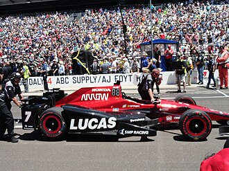

Nov 12, 2026 | 1430 words | 14 min read
7.3.1. MA: Looping Structures#
Background#

Fig. 7.1 2017 Indianapolis 500 Carb Day Pit Stop Challenge. Photo by NaBUru38, licensed under CC BY-SA 4.0.#
In motorsports, race engineers must continuously evaluate vehicle performance to determine when a driver should make a pit stop. Pit strategy involves balancing several competing factors, including fuel availability, tire performance, and maintaining competitive lap times.
Fuel consumption varies throughout a race due to changes in driving conditions, vehicle speed, and driver behavior. As fuel is consumed, the amount remaining in the vehicle decreases. Race engineers must ensure that sufficient fuel remains to complete additional laps while maintaining a minimum reserve.
Tire performance also influences pit strategy. As tires wear, lap times may increase, reducing the vehicle’s competitiveness. Even when sufficient fuel is available, declining tire performance may require an earlier pit stop.
In this assignment, you will develop a MATLAB program to analyze fuel consumption measurements, predict tire performance, and recommend the number of additional laps the car should complete before its next pit stop.
Race Performance Data and Operating Parameters#
The racing team has recorded fuel consumption measurements over a series of completed laps. These measurements, expressed in liters per lap, are provided in race_fuel_data.txt. The team is evaluating the car’s current condition after the recorded laps to determine how many additional laps it can complete before its next pit stop.
The team uses the operating parameters in Table 7.8 to evaluate fuel availability and tire performance.
Parameter |
Value |
Description |
|---|---|---|
Initial Fuel Quantity |
35.0 L |
Fuel available at the beginning of the recorded laps. |
Minimum Fuel Reserve |
3.0 L |
Minimum fuel quantity that must remain in the vehicle. |
Estimated Future Fuel Consumption |
1.8 L/lap |
Expected fuel consumption during each additional lap. |
Baseline Lap Time |
72.5 s |
Predicted lap time at the end of the recorded laps, before additional tire degradation. |
Tire Degradation Rate |
0.25 s/lap |
Expected increase in lap time for each additional lap. |
Maximum Competitive Lap Time |
74.0 s |
Maximum predicted lap time considered competitive. |
To estimate the effect of tire degradation, the team uses the following simplified linear model:
where:
\(t_n\) is the predicted lap time after \(n\) additional laps (s).
\(t_0\) is the baseline lap time (s).
\(d\) is the tire degradation rate (s/lap).
\(n\) is the number of additional laps completed, where \(n = 0\) represents the baseline condition.
The baseline lap time represents the vehicle’s predicted lap time at the end of the recorded laps. The model estimates additional tire degradation from this point forward. The model assumes that lap times increase at a constant rate as tires degrade. Actual tire performance is influenced by additional factors, including track conditions, temperature, and driving behavior.
The racing team must evaluate both fuel availability and predicted tire performance to determine the maximum number of additional laps the car can complete before a pit stop is necessary.
References
NaBUru38. (2017, May 26). 2017 Indianapolis 500 Carb Day Pit Stop Challenge - 04 [Photograph]. Wikimedia Commons. https://commons.wikimedia.org/wiki/File:2017_Indianapolis_500_Carb_Day_Pit_Stop_Challenge_-_04.jpg. Licensed under CC BY-SA 4.0.

Required Files#
Download the
ENGR 132 Templateand save it as username_7_3_1.m.Download the
Report Template, complete it, and save it as username_report_7_3_1.pdf.
Task 1: MATLAB Script#
Develop a MATLAB script to evaluate the racing team’s fuel availability and tire performance and recommend a pit strategy using the provided data and operating parameters.
Programming Standards
Review and reference the MATLAB Programming Standards Guide to ensure your code follows the required formatting and documentation standards, including the use of clear and descriptive comments.
Part 1: Fuel Consumption#
The racing team has recorded fuel consumption measurements during a series of completed laps. These measurements are provided in race_fuel_data.txt.
Assume the car begins the recorded laps with the initial fuel quantity specified in Table 7.8. Import the provided data into MATLAB. Then, use a
forloop to calculate the fuel remaining after each recorded lap and store the results in a row vector. Do not usesumin place of these iterative calculations. Usefprintfto display the fuel remaining after each lap.Calculate the proportion of recorded laps with fuel consumption greater than the estimated fuel consumption rate specified in Table 7.8. Use
fprintfto display the result as a percentage.Using the estimated future fuel consumption rate and minimum fuel reserve specified in Table 7.8, determine the maximum number of additional complete laps the vehicle can travel without falling below the minimum fuel reserve. Use
fprintfto display the maximum number of laps that the vehicle could travel in the Command Window.
The number of additional laps must be a whole number.
A lap may only be counted if the vehicle can complete it while maintaining the required fuel reserve.
Programming Standards Exception
For this assignment, fprintf statements may be included in the Calculations section when displaying results generated during loop iterations. All other programming standards still apply.
The maximum number of additional laps based on fuel availability will be used in Part 3 to determine the recommended pit strategy.
Part 2: Tire Degradation#
In addition to fuel availability, tire degradation affects the number of additional laps the car can complete while maintaining competitive lap times.
As tires degrade, lap times increase, reducing the car’s competitive performance.
Using the baseline lap time and tire degradation rate specified in Table 7.8, use a
whileloop to determine the maximum number of additional competitive laps the car can complete without exceeding the maximum competitive lap time.Use
fprintfto display the maximum number of additional competitive laps in the Command Window.
Part 3: Recommend a Pit Strategy#
Using the results from Parts 1 and 2, determine when the racing team should make its next pit stop.
Use a selection structure to compare the maximum number of additional laps supported by fuel availability and tire performance.
Determine the recommended number of additional laps before the next pit stop based on the more restrictive constraint.
Identify the limiting factor as:
FUELif fuel availability limits the number of additional laps.TIRESif tire performance limits the number of additional laps.BOTHif the two constraints allow the same number of additional laps.
Use
fprintfto display the recommended number of additional laps and the limiting factor in the Command Window.
Sample Output#
Sample Output
>> username_7_3_1 Fuel remaining after lap 1: 33.28 Fuel remaining after lap 2: 31.43 Fuel remaining after lap 3: 29.65 Fuel remaining after lap 4: 27.74 Fuel remaining after lap 5: 26.05 Fuel remaining after lap 6: 24.22 Fuel remaining after lap 7: 22.46 Fuel remaining after lap 8: 20.58 Fuel remaining after lap 9: 18.84 Fuel remaining after lap 10: 17.03 Fuel remaining after lap 11: 15.24 Fuel remaining after lap 12: 13.38
--- Fuel Consumption Analysis --- Recorded laps exceeding estimated fuel consumption: 50.0% Maximum additional laps based on fuel: 5
--- Tire Performance Analysis --- Maximum additional competitive laps based on tires: 6
--- Pit Strategy Recommendation --- Recommended additional laps before pit stop: 5 Limiting factor: FUEL
Task 2: Technical Report#
Analysis Questions#
Complete the provided report template. Answer its analysis questions using evidence from your MATLAB results, including relevant observations and numerical values.
Report Documentation#
Complete all remaining sections of the report template:
Collaboration Disclosure: Identify any collaborators and describe their contributions.
AI Use Disclosure: Document any generative AI use.
Use of Unfamiliar Functions: Document any MATLAB functions not covered in the course materials.
Academic Integrity Statement: Review the ENGR 132 Academic Integrity Policy and complete the acknowledgment.
If you did not collaborate, use generative AI, or use unfamiliar MATLAB functions, indicate this in the corresponding section.
Quick Guide: Saving and Submitting Your Report as a PDF
To complete your technical report, you must edit the provided Word template (.docx) and convert it to a PDF for final grading. Follow this simplified workflow:
Edit in Word: Download and open the
.docxtemplate in Microsoft Word. Avoid editing in web previewers or Google Docs, as they will corrupt your formulas and chart formatting.Save as PDF Only When Finished: Type your answers and copy any charts or images directly into the Word document, saving your progress frequently. Once your report is 100% complete, save or export the document as a PDF. (Do not convert to PDF early, as PDFs are static and cannot be edited.)
Submit to Gradescope: Upload your finalized PDF and any other required deliverables to the corresponding assignment in Gradescope. Always review your uploaded files from the Gradescope confirmation screen to verify your work is complete.
Gradescope Submission#
Save Deliverables: Ensure all required assignment files are saved and named exactly as specified in the assignment instructions. If a template file name contains the word
template, replace only that word with your Purdue username.Navigate to Gradescope: Log in to Gradescope. From your Dashboard, open the assignment.
Upload your work: Select the Upload submission method. Drag and drop all required files (or a compressed
.zipfolder) into Gradescope, and select Upload.Confirm Submission: When your upload is successful, you will see a confirmation message on your screen and receive an automated email receipt.
Add Team Members (if applicable): If this is a team assignment, add all team members to the submission. Each teammate should confirm they can see the submission in their own Gradescope account. For help, visit Gradescope’s documentation on adding team members.
Review Autograder Results: Wait a few minutes for the autograder to evaluate the relevant files. Scroll down to view any failed test cases. If you need assistance interpreting the output or errors, ask your teaching team.
Resubmit if Necessary: You can edit your files and select Resubmit as many times as you need before the assignment deadline. Only your final, active submission is graded. (Note: If you need to resubmit, you must upload all required files for the assignment again).
For a detailed walkthrough, review the official Gradescope Submission Guide.